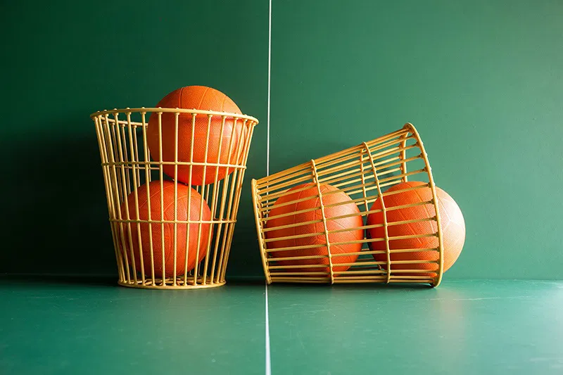
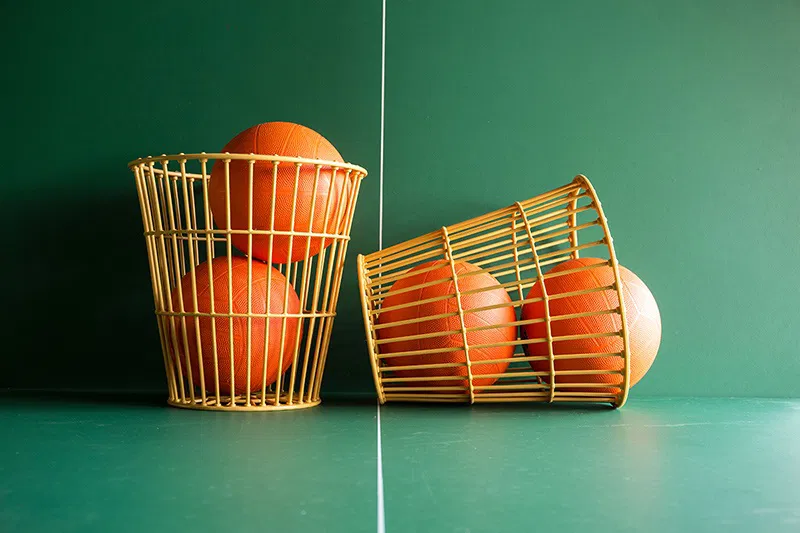

My Hobbys
Basketball • Music • Chairball
About My Hobbies
I enjoy basketball, music, and chairball, as these activities allow me to stay active, express my creativity, and maintain a positive and fulfilling lifestyle.
My Journey
| Year | Achievement |
|---|---|
| 2020 | I Began actively exploring a variety of hobbies. |
| 2023 | Developed advanced skills in basketball and music |
| 2025 | Refined expertise in basketball and music and achieved mastery in chairball. |
Quick Gallery
View Full Gallery


Equipment & Tools
| Item | Purpose |
|---|---|
| Basketball | Basketball serves to promote physical fitness, develop teamwork and strategic skills, and provide enjoyment and personal growth. |
| Headphones/Earbuds | Enjoy music during my free time. |
| Chairball chairs | Engaged in chairball to promote teamwork and physical activity |
Tips & Fun Facts
Basketball
Basketball is a fast-paced team sport played on a rectangular court where two teams, typically of five players each, compete to score points by shooting a ball through the opposing team’s hoop. The game emphasizes agility, speed, coordination, and teamwork. Players must make quick decisions, execute precise passes and shots, and maintain strong defensive and offensive strategies. Known for its dynamic pace and frequent momentum shifts, basketball combines athletic skill with strategic thinking, making it both exciting to play and watch


I have played basketball for several years, developing teamwork, quick decision-making, and coordination. I enjoy the fast-paced nature of the game and the challenge of improving my skills.
Close

 
